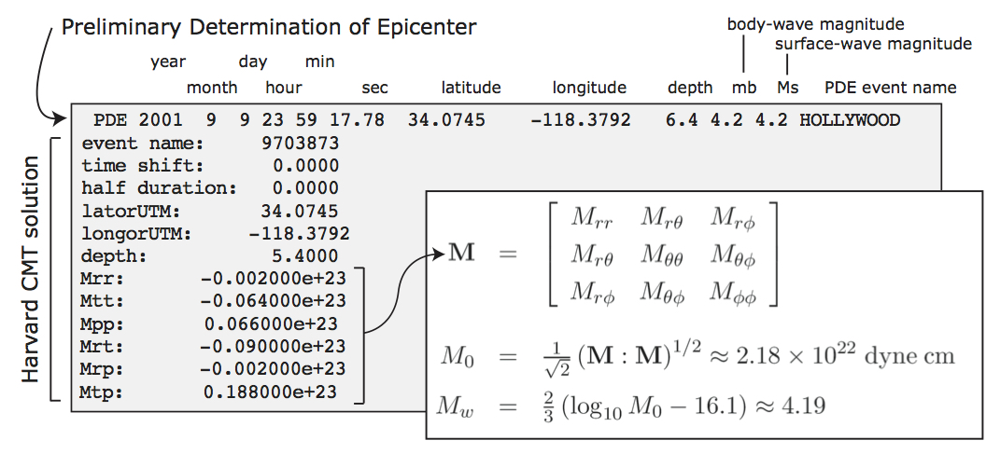
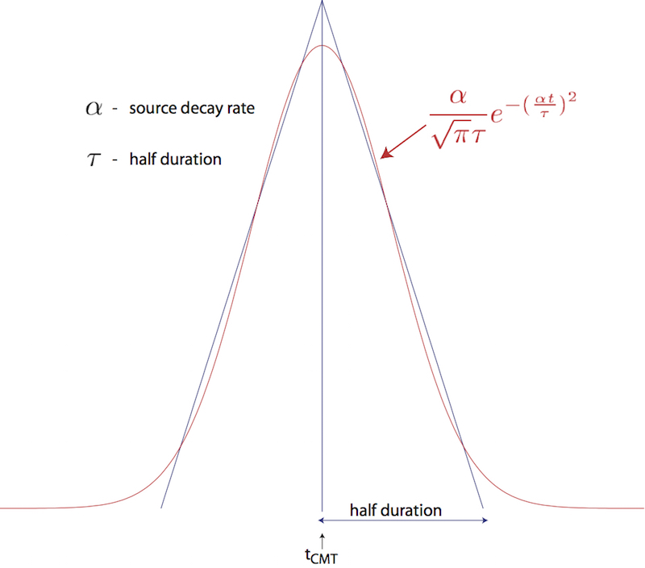
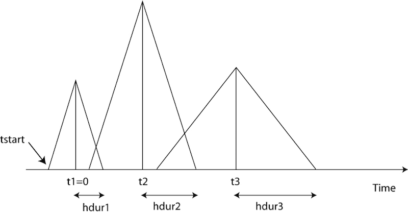
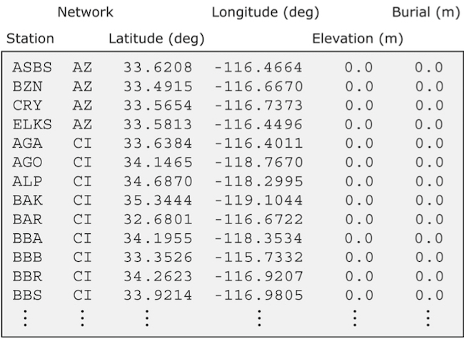

Table of Contents
Running the Solver xspecfem3D
Now that you have successfully generated the databases, you are ready to compile the solver. In the main directory, type
make xspecfem3D
Please note that xspecfem3D must be called directly from the main directory, as most of the binaries of the package.
The solver needs three input files in the DATA directory to run:
Par_file
the main parameter file which was discussed in detail in the previous Chapter [cha:Creating-Distributed-Databases],
CMTSOLUTION or FORCESOLUTION
the earthquake source parameter file or the force source parameter file, and
STATIONS
the stations file.
Most parameters in the Par_file should be set prior to running the databases generation. Only the following parameters may be changed after running xgenerate_databases:
-
the simulation type control parameters:
SIMULATION_TYPEandSAVE_FORWARD -
the time step parameters
NSTEPandDT -
the absorbing boundary control parameter
PML_CONDITIONSon condition that thePML_INSTEAD_OF_FREE_SURFACEflag remains unmodified after running the databases generation. -
the movie control parameters
MOVIE_SURFACE,MOVIE_VOLUME, andNTSTEPS_BETWEEN_FRAMES -
the ShakeMap option
CREATE_SHAKEMAP -
the output information parameters
MOVIE_TYPE,NTSTEP_BETWEEN_OUTPUT_INFOandNTSTEP_BETWEEN_OUTPUT_SEISMOS -
the
PRINT_SOURCE_TIME_FUNCTIONflags
Any other change to the Par_file implies rerunning both the database generator xgenerate_databases and the solver xspecfem3D.
For any particular earthquake, the CMTSOLUTION file that represents the point source may be obtained directly from the Harvard Centroid-Moment Tensor (CMT) web page . It looks like the example shown in Fig. [fig:CMTSOLUTION-file].

The CMTSOLUTION file should be edited in the following way:
-
Set the latitude or UTM (x) coordinate, longitude or UTM (y) coordinate, depth of the source (in km). Remark: In principle in the international CMTSOLUTION format in geophysics the depth is given in kilometers; however for users in other fields (non-destructive testing, medical imaging, near-surface studies…) who may prefer to give the position of the source (rather than its depth from the surface), or for people who use FORCESOLUTION to describe the source rather than CMTSOLUTION, we provide an option called USE_SOURCES_RECEIVERS_Z in the Par_file, and if so that position is read from CMTSOLUTION in meters rather than kilometers (and again, it is then the true position in the mesh, not the depth). When option USE_SOURCES_RECEIVERS_Z in the Par_file is on, this remark applies to the position of the receivers as well.
-
Set the
time shiftparameter equal to (0.0) (the solver will not run otherwise.) The time shift parameter would simply apply an overall time shift to the synthetics, something that can be done in the post-processing (see Section [sec:Process-data-and-syn]). -
For point-source simulations (see finite sources, page ) we recommend setting the source half-duration parameter
half durationequal to zero, which corresponds to simulating a step source-time function, i.e., a moment-rate function that is a delta function. Ifhalf durationis not set to zero, the code will use a Gaussian (i.e., a signal with a shape similar to a ‘smoothed triangle’, as explained in D. Komatitsch and Tromp (2002) and shown in Fig [fig:gauss.vs.triangle]) source-time function with half-widthhalf duration. We prefer to run the solver withhalf durationset to zero and convolve the resulting synthetic seismograms in post-processing after the run, because this way it is easy to use a variety of source-time functions (see Section [sec:Process-data-and-syn]). D. Komatitsch and Tromp (2002) determined that the noise generated in the simulation by using a step source time function may be safely filtered out afterward based upon a convolution with the desired source time function and/or low-pass filtering. Use the serial codeconvolve_source_timefunction.f90and the scriptconvolve_source_timefunction.cshfor this purpose, or alternatively use signal-processing software packages such as SAC . Typemake xconvolve_source_timefunctionto compile the code and then set the parameter
hdurinconvolve_source_timefunction.cshto the desired half-duration. -
The zero time of the simulation corresponds to the center of the triangle/Gaussian, or the centroid time of the earthquake. The start time of the simulation is (t=-1.5*\texttt{half duration}) (the 1.5 is to make sure the moment rate function is very close to zero when starting the simulation). To convert to absolute time (t_{\mathrm{abs}}), set
(t_{\mathrm{abs}}=t_{\mathrm{pde}}+\texttt{time shift}+t_{\mathrm{synthetic}})
where (t_{\mathrm{pde}}) is the time given in the first line of the
CMTSOLUTION,time shiftis the corresponding value from the originalCMTSOLUTIONfile and (t_{\mathrm{synthetic}}) is the time in the first column of the output seismogram.

If you know the earthquake source in strike/dip/rake format rather than in CMTSOLUTION format, use the C code SPECFEM3D_GLOBE/utils/strike_dip_rake_to_CMTSOLUTION.c to convert it. The conversion formulas are given for instance in Aki and Richards (1980). Note that the Aki and Richards (1980) convention is slightly different from the Harvard CMTSOLUTION convention (the sign of some components is different). The C code outputs both.
Centroid latitude and longitude should be provided in geographical coordinates. The code converts these coordinates to geocentric coordinates (Dahlen and Tromp 1998). Of course you may provide your own source representations by designing your own CMTSOLUTION file. Just make sure that the resulting file adheres to the Harvard CMT conventions (see Appendix [cha:Coordinates]). Note that the first line in the CMTSOLUTION file is the Preliminary Determination of Earthquakes (PDE) solution performed by the USGS NEIC, which is used as a seed for the Harvard CMT inversion. The PDE solution is based upon P waves and often gives the hypocenter of the earthquake, i.e., the rupture initiation point, whereas the CMT solution gives the ‘centroid location’, which is the location with dominant moment release. The PDE solution is not used by our software package but must be present anyway in the first line of the file.
[To-simulate-a]To simulate a kinematic rupture, i.e., a finite-source event, represented in terms of (N_{\mathrm{sources}}) point sources, provide a CMTSOLUTION file that has (N_{\mathrm{sources}}) entries, one for each subevent (i.e., concatenate (N_{\mathrm{sources}}) CMTSOLUTION files to a single CMTSOLUTION file). At least one entry (not necessarily the first) must have a zero time shift, and all the other entries must have non-negative time shift. Each subevent can have its own half duration, latitude, longitude, depth, and moment tensor (effectively, the local moment-density tensor).
Note that the zero in the synthetics does NOT represent the hypocentral time or centroid time in general, but the timing of the center of the source triangle with zero time shift (Fig [fig:sourcetiming]).
Although it is convenient to think of each source as a triangle, in the simulation they are actually Gaussians (as they have better frequency characteristics). The relationship between the triangle and the gaussian used is shown in Fig [fig:gauss.vs.triangle]. For finite fault simulations it is usually not advisable to use a zero half duration and convolve afterwards, since the half duration is generally fixed by the finite fault model.
The FORCESOLUTION file should be edited in the following way:
-
Set the
time shiftparameter equal to (0.0) (the solver will not run otherwise.) The time shift parameter would simply apply an overall time shift to the synthetics, something that can be done in the post-processing (see Section [sec:Process-data-and-syn]). -
Set the
f0parameter (the dominant frequency) of the Ricker source time function (i.e., the second derivative of a Gaussian) whenUSE_RICKER_TIME_FUNCTIONis turned on in the main parameter filePar_file. In case that the solver uses a (pseudo) Dirac delta source time function to represent a force point source, a very short duration of five time steps is automatically set by default. Note that we use the standard definition of a Ricker, for a dominant frequency (f_0): (\mathrm{Ricker}(t) = (1 - 2 a t^2) e^{-a t^2}), with (a = \pi^2 f_0^2), whose Fourier transform is thus: (\frac{1}{2} \frac{\sqrt{\pi}\omega^2}{a^{3/2}}e^{-\frac{\omega^2}{4 a}}) This gives the wavelet of Figure [fig:RickerWavelet]. -
Set the latitude or UTM (x) coordinate, longitude or UTM (y) coordinate, depth of the source (in km).
-
Set the magnitude of the force source.
-
Set the components of a (non-unitary) direction vector for the force source in the East/North/Vertical basis (see Appendix A for the orientation of the reference frame).
Where necessary, set a FORCESOLUTION file in the same way you configure a CMTSOLUTION file with (N_{\mathrm{sources}}) entries, one for each subevent (i.e., concatenate (N_{\mathrm{sources}}) FORCESOLUTION files to a single FORCESOLUTION file). At least one entry (not necessarily the first) must have a zero time shift, and all the other entries must have non-negative time shift. Each subevent can have its own half latitude, longitude, depth, half duration and force parameters.

[fig:sourcetiming]
In addition to inbuild source time function, the solver can also use an external source time function defined by the user. This option can be activated by setting EXTERNAL_SOURCE_FILE to true in Par_File and by adding the name of the file containing the source time function at the end of FORCESOLUTION or CMTSOLUTION files. The source time function file must contain the value of the time step on its first line, and then a single column with the amplitude of the source time function for all the time steps. The time step must be exactly the same as that used for the simulation. Note when the EXTERNAL_SOURCE_FILE is set to false then the line with the external source time function file must not appear in the files FORCESOLUTION and CMTSOLUTION otherwise the solver will exit with an error. When using an external source file, you can still set up the source location and directivity as in the default case. In the FORCESOLUTION file: you set “latorUTM”, “longorUTM” and “depth” to define the position of your point source. Then if you want to define a directivity, then change the following lines: “component dir vect source E”, “component dir vect source N” and “component dir vect source Z_UP”. What you are doing is simply that you define the source position and directivity the same way as in the default case, but in addition you are specifying the path to read in a non-default source time function from an external file.
The solver can calculate seismograms at any number of stations for basically the same numerical cost, so the user is encouraged to include as many stations as conceivably useful in the STATIONS file, which looks like this:

Each line represents one station in the following format:
Station Network Latitude(degrees) Longitude(degrees) Elevation(m) burial(m)
The solver xspecfem3D filters the list of stations in file DATA/STATIONS to exclude stations that are not located within the region given in the Par_file (between LATITUDE_MIN and LATITUDE_MAX and between LONGITUDE_MIN and LONGITUDE_MAX). The filtered file is called DATA/STATIONS_FILTERED.
Elevation and burial are generally applicable to geographical regions. Burial is measured down from the top surface. For other problems in other fields (ultrasonic testing, medical imaging etc…), it may be confusing. We generally follow either of the following procedures for those kind of problems:
Procedure 1 (mostly for geophysics, when the top surface is a free surface (topography) and the five other edges of the mesh are absorbing surfaces):
-
Put the origin on the top of the model.
-
Let’s say you want to place two receivers at (x1,y1,z1) and (x2,y2,z2). Your STATIONS file should look like:
BONE GR y1 x1 0.00 -z1 BONE GR y2 x2 0.00 -z2
Procedure 2 (useful for other application domains, in which using the absolute (Z) position of the sources and receivers is more standard than using their depth from the surface):
-
In principle in the international CMTSOLUTION format in geophysics the depth is given in kilometers; however for users in other fields (non-destructive testing, medical imaging, near-surface studies…) who may prefer to give the position of the source (rather than its depth from the surface), or for people who use FORCESOLUTION to describe the source rather than CMTSOLUTION, we provide an option called USE_SOURCES_RECEIVERS_Z in the Par_file, and if so that position is read from CMTSOLUTION in meters rather than kilometers (and again, it is then the true position in the mesh, not the depth). When option USE_SOURCES_RECEIVERS_Z in the Par_file is on, this remark applies to the position of the receivers as well.
-
Let’s say you want to place two receivers at (x1,y1,z1) and (x2,y2,z2). Your STATIONS file should then look like: BONE GR y1 x1 0.00 z1 BONE GR y2 x2 0.00 z2 The option USE_SOURCES_RECEIVERS_Z set to .true. will then discard the elevation and set burial as the (z) coordinate. Third column is Y and Fourth is X due to the latitude/longitude convention. You can replace the station name “BONE” with any word of length less than 32, and the network name “GR” with any word of length less than 8. You can always plot OUTPUT_FILES/sr.vtk file in ParaView to check the source/receiver locations after your simulation.
Solver output is provided in the OUTPUT_FILES directory in the output_solver.txt file. Output can be directed to the screen instead by uncommenting a line in constants.h:
! uncomment this to write messages to the screen
! integer, parameter :: IMAIN = ISTANDARD_OUTPUT
On PC clusters the seismogram files are generally written to the local disks (the path LOCAL_PATH in the Par_file) and need to be gathered at the end of the simulation.
While the solver is running, its progress may be tracked by monitoring the ‘timestamp*’ files in the OUTPUT_FILES/ directory. These tiny files look something like this:
Time step # 10000
Time: 108.4890 seconds
Elapsed time in seconds = 1153.28696703911
Elapsed time in hh:mm:ss = 0 h 19 m 13 s
Mean elapsed time per time step in seconds = 0.115328696703911
Max norm displacement vector U in all slices (m) = 1.0789589E-02
The timestamp* files provide the Mean elapsed time per time step in seconds, which may be used to assess performance on various machines (assuming you are the only user on a node), as well as the Max norm displacement vector U in all slices (m). If something is wrong with the model, the mesh, or the source, you will see the code become unstable through exponentially growing values of the displacement and fluid potential with time, and ultimately the run will be terminated by the program. You can control the rate at which the timestamp files are written based upon the parameter NTSTEP_BETWEEN_OUTPUT_INFO in the Par_file.
Having set the Par_file parameters, and having provided the CMTSOLUTION (or the FORCESOLUTION) and STATIONS files, you are now ready to launch the solver! This is most easily accomplished based upon the go_solver script (See Chapter [cha:Scheduler] for information about running through a scheduler, e.g., LSF). You may need to edit the last command at the end of the script that invokes the mpirun command. The runall script compiles and runs both xgenerate_databases and xspecfem3D in sequence. This is a safe approach that ensures using the correct combination of distributed database output and solver input.
It is important to realize that the CPU and memory requirements of the solver are closely tied to choices about attenuation (ATTENUATION) and the nature of the model (i.e., isotropic models are cheaper than anisotropic models). We encourage you to run a variety of simulations with various flags turned on or off to develop a sense for what is involved.
For the same model, one can rerun the solver for different events by simply changing the CMTSOLUTION or FORCESOLUTION file, or for different stations by changing the STATIONS file. There is no need to rerun the xgenerate_databases executable. Of course it is best to include as many stations as possible, since this does not add to the cost of the simulation.
We have also added the ability to run several calculations (several earthquakes) in an embarrassingly-parallel fashion from within the same run; this can be useful when using a very large supercomputer to compute many earthquakes in a catalog, in which case it can be better from a batch job submission point of view to start fewer and much larger jobs, each of them computing several earthquakes in parallel. To turn that option on, set parameter NUMBER_OF_SIMULTANEOUS_RUNS to a value greater than 1 in file setup/constants.h.in before configuring and compiling the code. When that option is on, of course the number of processor cores used to start the code in the batch system must be a multiple of NUMBER_OF_SIMULTANEOUS_RUNS, all the individual runs must use the same number of processor cores, which as usual is NPROC in the input file DATA/Par_file, and thus the total number of processor cores to request from the batch system should be NUMBER_OF_SIMULTANEOUS_RUNS \times NPROC. All the runs to perform must be placed in directories called run0001, run0002, run0003 and so on (with exactly four digits) and you must create a link from the root directory of the code to the first copy of the executable programs by typing ln -s run0001/bin bin.
Note on the viscoelastic model used
The model used is a constant (Q), thus with no dependence on frequency ((Q(f)) = constant). See e.g. Blanc et al. (2016).
However in practice for technical reasons it is approximated based on the sum of different Generalized Zener body mechanisms and thus the code outputs the band in which the approximation is very good, outside of that range it can be less accurate. The logarithmic center of that frequency band is the ATTENUATION_f0 parameter defined (in Hz) in input file DATA/Par_file.
Regarding attenuation (viscoelasticity), in the Par_file you need to select the number of standard linear solids (N_SLS) to use to mimic a constant (Q) quality factor. Using N_SLS = 3 is always safe. If (and only if) you know what you are doing, you can try to reduce that in order to reduce the cost of the simulations. Figure [fig:selectNSLS] shows values that you can consider using (again, if and only if you know what you are doing). That table has been created by Zhinan Xie using a comparison between results obtained with a truly-constant (Q) and results obtained with its approximation based on N_SLS standard linear solids. The comparison is performed using the time-frequency misfit and goodness-of-fit criteria proposed by Kristeková, Kristek, and Moczo (2009). The table is drawn for a dimensionless parameter representing the distance of propagation.

References
Aki, K., and P. G. Richards. 1980. Quantitative Seismology, Theory and Methods. San Francisco, USA: W. H. Freeman.
Blanc, Émilie, Dimitri Komatitsch, Emmanuel Chaljub, Bruno Lombard, and Zhinan Xie. 2016. “Highly Accurate Stability-Preserving Optimization of the Zener Viscoelastic Model, with Application to Wave Propagation in the Presence of Strong Attenuation.” Geophys. J. Int. 205 (1): 427–39. doi:10.1093/gji/ggw024.
Dahlen, F. A., and J. Tromp. 1998. Theoretical Global Seismology. Princeton, New-Jersey, USA: Princeton University Press.
Komatitsch, D., and J. Tromp. 2002. “Spectral-Element Simulations of Global Seismic Wave Propagation-I. Validation.” Geophys. J. Int. 149 (2): 390–412. doi:10.1046/j.1365-246X.2002.01653.x.
Kristeková, Miriam, Jozef Kristek, and Peter Moczo. 2009. “Time-Frequency Misfit and Goodness-of-Fit Criteria for Quantitative Comparison of Time Signals.” Geophys. J. Int. 178 (2): 813–25. doi:10.1111/j.1365-246X.2009.04177.x.
This documentation has been automatically generated by pandoc based on the User manual (LaTeX version) in folder doc/USER_MANUAL/ (Mar 10, 2020)